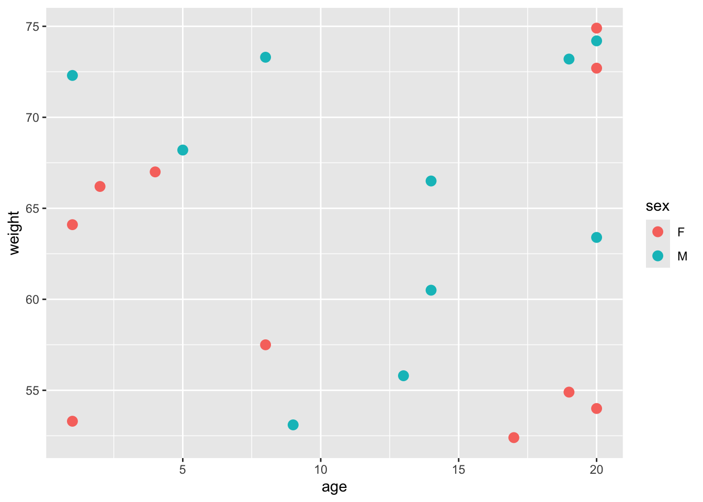
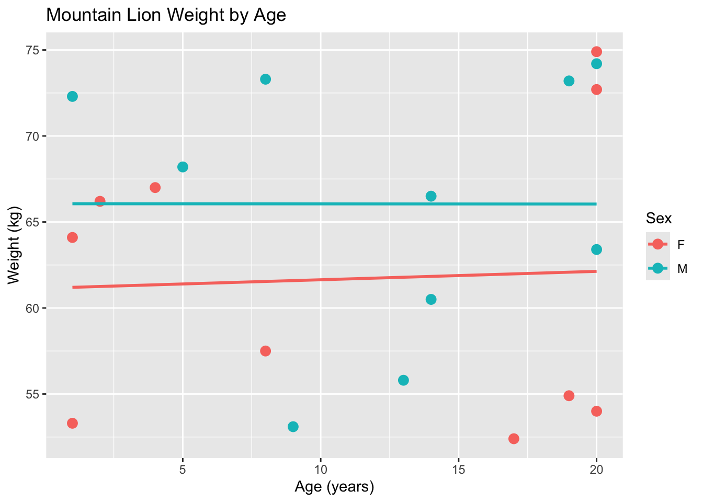
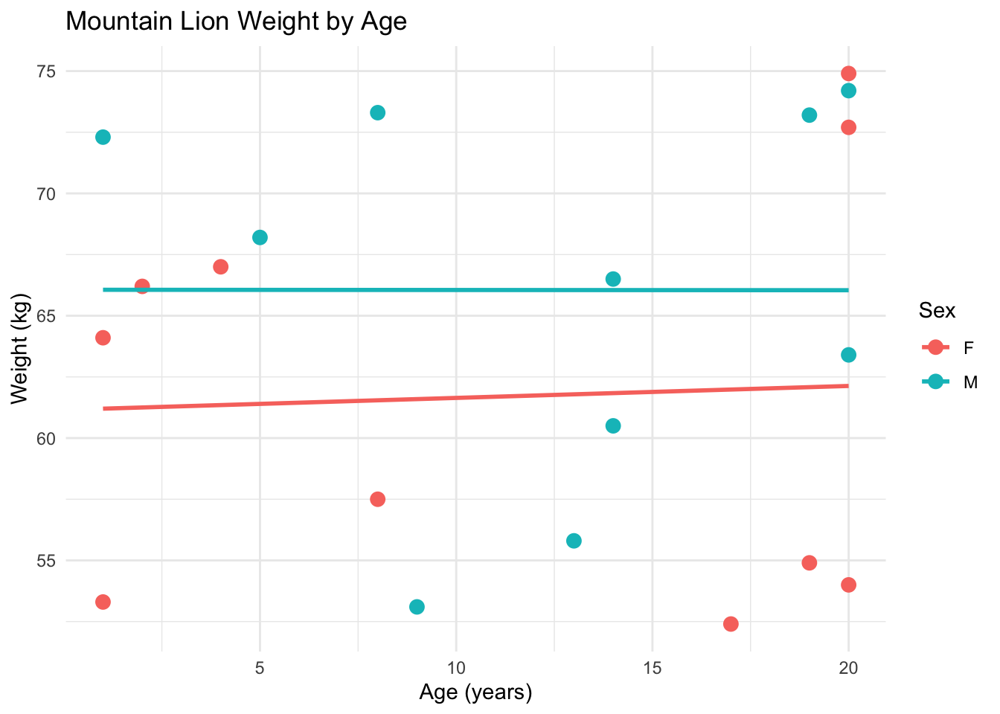

Chapter 6 Tidyverse
6.1 Why Tidyverse?
The tidyverse is a collection of R packages designed to simplify and streamline data science tasks. It promotes the concept of “tidy data,” where each column is a variable and each row is an observation, which simplifies analysis and visualization. Core tidyverse packages include ggplot2 for plotting, dplyr for data manipulation, and tidyr for reshaping data.
## ── Attaching core tidyverse packages ──────────────────────── tidyverse 2.0.0 ──
## ✔ dplyr 1.1.4 ✔ readr 2.1.5
## ✔ forcats 1.0.0 ✔ stringr 1.5.1
## ✔ ggplot2 3.5.1 ✔ tibble 3.2.1
## ✔ lubridate 1.9.3 ✔ tidyr 1.3.1
## ✔ purrr 1.0.2
## ── Conflicts ────────────────────────────────────────── tidyverse_conflicts() ──
## ✖ dplyr::filter() masks stats::filter()
## ✖ dplyr::lag() masks stats::lag()
## ℹ Use the conflicted package (<http://conflicted.r-lib.org/>) to force all conflicts to become errorsNotice the Conflicts from loading the tidyverse package.
One of the key strengths of the tidyverse is its readable syntax, especially with the use of the pipe operator (%>%), which allows users to chain together multiple steps in a clear, logical order.
# example of using a piped operation
sheep <- filter(x = sheep, herds %in% c("Bx", "Cn")) %>%
mutate(Yr_Month = paste(Year, Month, sep = "_"))Note that I had to specify the object (sheep) in the filter() function, but not in the mutate() function. The %>% operator tells R to pass the sheep data frame through the pipeline, so it’s automatically used in the subsequent function.
Learning tidyverse provides efficient tools and workflows for data cleaning, exploration, and analysis. One of the most commonly used packages within the tidyverse is dplyr (data plier), which provides a set of powerful and intuitive functions for manipulating data frames. With dplyr, you can easily filter rows, select columns, create new variables, group data, and summarize it—all using clear, readable code.
Key Features:
- Consistent syntax across packages, making code easier to write and read.
- Tidy data structure, where each variable is a column and each observation is a row.
- Readable workflows using the pipe operator (%>%) to chain commands clearly.
- Integrated tools for the entire data science process—importing, cleaning, transforming, visualizing, and modeling data.
- User-friendly functions with intuitive names and logical default argument values.
- Open-source and widely supported, with ample online learning resources
- Provides tools for data manipulation, exploration, and visualization.
- Uses piping (%>%) to create readable, fluent workflows (through the magrittr package)
6.2 Main dplyr Functions
dplyr, a main package of the tidyverse, consists of five main functions:
filter(): Subset the data based on specific conditions.
# create data frame object
snbs <- data.frame(AID = c("S488", "S500", "S468"),
Sex = c("M", "F", "F"),
Herd = c("Ca", "Gb", "Wh"),
RU = c("NRU", "NRU", "CRU"))
# filter to females
females <- filter(snbs, Sex == "F")
females## AID Sex Herd RU
## 1 S500 F Gb NRU
## 2 S468 F Wh CRUselect(): Choose specific columns from the data.
# select AID and RU columns
snbs_s <- select(snbs, AID, RU)
# remove one column with negative indexing
snbs_s <- select(snbs, -Sex, -RU)mutate(): Modify or create new variables in the data.
snbs_as <- mutate(snbs, AID_Sex = paste(AID, Sex, sep = "_")) %>%
select(AID, Sex, AID_Sex)
head(snbs_as, 1)## AID Sex AID_Sex
## 1 S488 M S488_Mgroup_by(): Group data based on one or more variables for grouped operations.
## # A tibble: 3 × 4
## # Groups: RU [2]
## AID Sex Herd RU
## <chr> <chr> <chr> <chr>
## 1 S488 M Ca NRU
## 2 S500 F Gb NRU
## 3 S468 F Wh CRUsummarize(): Generate summary statistics from the data. Common summary statistics include:n(),mean(),mode(),range(),median(),sd().
## # A tibble: 2 × 2
## RU n
## <chr> <int>
## 1 CRU 1
## 2 NRU 2arrange(): Sort the data in a specific order.
You can perform many operations in one call using the pipe operator:
snbs_tidy <- filter(snbs, Sex == "F") %>%
mutate(AID_Sex = paste(AID, Sex, sep = "_")) %>%
select(-RU) %>%
group_by(Herd) %>%
summarize(n = n()) %>%
arrange(Herd)EXERCISE 1
- Recreate the following object:
elk_df <- data.frame(
elk_id = c("E001", "E002", "E003", "E004", "E005"),
weight = c(350, 410, 290, 500, 375),
herd = c("North", "South", "East", "West", "North"))
- Use
filter()to subset weights > 375 - Create a new data frame that only contains the elk_id and herd column
- Create a new data frame that is grouped by herd. Calculate the number of observations per herd. Arrange the final dataset in alphabetical order.
6.3 Tidyverse vs BaseR
There are many different ways to accomplish the same task in R (e.g. using tidyverse or baseR syntax). Whichever syntax you choose depends on what you’re more comfortable with. Personally, I like using a mix of both. Tidyverse code is intuitive, but for really large data sets, baseR works faster. It’s all about finding what works best for you and your data.
| Purpose | Tidyverse (dplyr) |
Base R Equivalent |
|---|---|---|
| Subset rows | filter() |
subset() or logical indexing: df[df$col == value, ] |
| Select columns | select() |
df[, c("col1", "col2")] |
| Create/modify columns | mutate() |
df$new_col <- ... |
| Group data | group_by() |
tapply(), aggregate(), or split() |
| Summarize data | summarize() (or summarise()) |
aggregate() or tapply() with mean(), sum(), etc. |
6.4 ggplot
ggplot is a powerful and flexible R package used for data visualization. It is part of the tidyverse and is built on the Grammar of Graphics—a layered approach to building plots that allows you to combine data, visual elements, and aesthetics step by step. You can customize nearly every part of a ggplot, including adding titles, axis labels, and legends; adjusting colors, shapes, and sizes; applying different themes; adding trend lines or annotations; and creating multi-panel layouts using faceting.
Key Features
- Layered plotting system: Build plots by adding layers (e.g., points, lines, bars).
- Aesthetic mapping: Easily map variables to visual properties like color, size, and shape.
- Customizable: Control themes, labels, scales, and more.
- Works seamlessly with tidy data and other tidyverse tools.
6.4.1 Components of ggplot
When using ggplot2 in R, your code is built in layers, with each part adding a new component to the plot. Here’s a breakdown of the key components you’ll commonly use:
- Data: The dataset you’re visualizing.
- Aesthetics (aes()): Defines how variables in the data are mapped to visual properties like position, color, or size.
- Geometries (geom_
()): Determine the type of plot (e.g. points, lines, bars, etc.)
Each ggplot() call begins with the data and aesthetic mappings, and layers like geom_
First we will create a fake lion dataset:
# Create fake lion data
lions <- data.frame(
id = paste0("Lion", 200:219),
age = sample(1:20, 20, replace = TRUE), # age in years
weight = round(rnorm(20, mean = 60, sd = 10), 1), # weight in kg
sex = sample(c("M", "F"), 20, replace = TRUE),
region = sample(c("Northern", "Southern", "Central", "Olancha"), 20, replace = TRUE)
)
head(lions, 3)## id age weight sex region
## 1 Lion200 7 55.1 F Central
## 2 Lion201 19 44.8 M Central
## 3 Lion202 4 54.4 F Olancha- The main ggplot() function
- ggplot(data = lions): This is where we tell ggplot what data we’re using. In this case, it’s the lions data frame.
- aes(x = age, y = weight, color = sex): This part is called the aesthetic mapping (or aes for short). It tells ggplot which variables to plot:
- x = age: We’re plotting age on the x-axis.
- y = weight: We’re plotting weight on the y-axis.
- color = sex: We want to color the points by the sex variable. This way, male and female lions will have different colors.
- Adding Points with geom_point()
 * geom_point(): This part tells ggplot to plot the data as points (a scatter plot). * size = 3: This adjusts the size of the points on the plot to make them more visible.
- Adding a trendline and labels
ggplot(data = lions, aes(x = age, y = weight, color = sex)) +
# Add scatterplot
geom_point(size = 3) +
# Adding trend line
geom_smooth(method = "lm", se = FALSE, aes(color = sex), linetype = "solid") +
labs(
title = "Mountain Lion Weight by Age",
x = "Age (years)",
y = "Weight (kg)",
color = "Sex"
) ## `geom_smooth()` using formula = 'y ~ x'
- geom_smooth: creates a trendline for each sex
labs(): This function is used to add titles and labels to the plot.- title: Adds a title to the plot.
- x: Labels the x-axis (Age).
- y: Labels the y-axis (Weight).
- color: Adds a label for the color legend, which shows the different colors for male and female lions.
- Final Touches with
theme_minimal()
- theme_minimal(): This is a simple and clean theme for the plot. It removes unnecessary background grids and makes the plot look more visually appealing. There are many other different themes such as
theme_class,theme_dark, andtheme_light.
ggplot(data = lions, aes(x = age, y = weight, color = sex)) +
# Add scatterplot
geom_point(size = 3) +
# Adding trend line
geom_smooth(method = "lm", se = FALSE, aes(color = sex), linetype = "solid") +
labs(
title = "Mountain Lion Weight by Age",
x = "Age (years)",
y = "Weight (kg)",
color = "Sex"
) +
theme_minimal()## `geom_smooth()` using formula = 'y ~ x'
Here is an example of making a barplot that is colored by different region.
# Create the bar plot, colored by region
ggplot(data = lions, aes(x = region, fill = region)) +
geom_bar(color = "black") + # Bar border color
labs(
title = "Number of Lions by Region",
x = "Region",
y = "Count of Lions"
) +
theme_minimal() +
scale_fill_brewer(palette = "Set3") # Using a color palette for better visuals6.4.2 Different plots in ggplot
| Plot Type | ggplot2 Function |
Description |
|---|---|---|
| Scatter Plot | geom_point() |
Shows relationship between two continuous variables |
| Line Plot | geom_line() |
Displays trends over time or ordered categories |
| Bar Chart (counts) | geom_bar() |
Plots the count of categories (x only) |
| Bar Chart (values) | geom_col() |
Plots values directly (requires both x and y) |
| Boxplot | geom_boxplot() |
Visualizes the distribution and spread by group |
| Histogram | geom_histogram() |
Shows distribution of a single continuous variable |
EXERCISE
- Create the following object:
# Create a fake data frame for bighorn sheep
bighorn_df <- data.frame(
ID = paste0("S", 500:530), # ID for each sheep
Age = sample(1:15, 31, replace = TRUE), # Random ages between 1 and 10
Weight = round(rnorm(31, mean = 75, sd = 15), 1), # Random weights with mean of 75 kg and sd of 15
Sex = sample(c("M", "F"), 31, replace = TRUE), # Random sexes (Male, Female)
Herd = sample(c("North", "South", "East", "West"), 31, replace = TRUE) # Random herd names
)- Create a histogram to visualize the weights of bighorn sheep.
- Set the bins to be blue.
- Add a black outline to the bins.
- Include a title as well as labels for the x and y axes.
- Apply a theme to enhance the plot’s appearance.
- Create a similar baseR plot